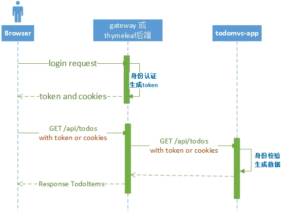

oss-todomvc-security
简介
本项目为oss-todomvc的公共的安全认证模块，主要包括如下功能：
- 定义用户登录、认证逻辑
- 存储用户信息
- 提供测试用户
本项目旨在向开发者演示：
- lib-security库的简单使用
- RPC场景下的安全认证流程
在oss-todomvc项目中用于以下方面：
- oss-todomvc-app项目的资源访问身份认证；
- 将安全层挂在代理上，提供oss-todomvc-gateway的用户登录以及后续访问的身份认证支持；
- 将安全层放在服务消费者，提供oss-todomvc-thymeleaf的用户登录及后续访问的身份认证支持。
设计思路
todomvc系列项目的登录以及后续认证流程如下图所示： 
用户登录逻辑
- 接收客户端通过form表单提交用户名密码
- 校验用户名和密码。
lib-security会根据认证的结果以及应用的类型执行不同的操作：- 认证通过
- RESTFUL类型的APP，返回加密的cookie、token以及用户的基本信息；
- TEMPLATE类型的APP，会跳转到开发人员指定的页面；
- MIXED类型的APP，会进行内容协商，根据请求类型从上面两种方式中选择。
- 认证失败
- RESTFUL类型的APP，返回401。
- TEMPLATE类型的APP，会跳转
/error页面； - MIXED类型的APP，会进行内容协商，根据请求类型从上面两种方式中选择。
- 认证通过
RESOURCE类型的APP，不提供用户登录的支持。
后续资源请求认证逻辑
- 用户通过cookie或者
X-Auth-Token携带token的方式，向后端发起资源请求； - 如果认证通过，继续执行后续的处理逻辑；如果认证失败，操作与上一节的处理方案一致。
security在zuul代理以及服务发现中的传递
- 无论通过cookie还是token的方式，依赖的lib-security会自动处理认证信息传递，用户不需要关注；
oss-todomvc-app、oss-todomvc-jquery、oss-todomvc-react共用同一套认证逻辑以及cookieKey和jwtKey。